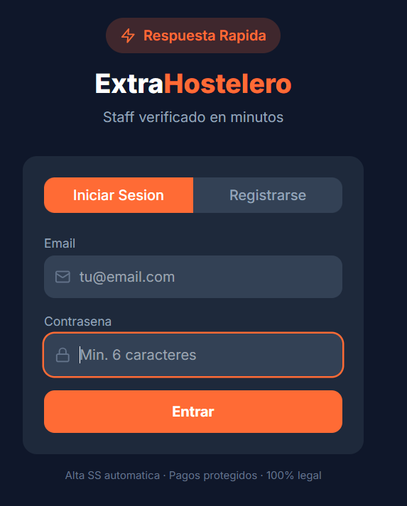

Galería
Echa un vistazo a la interfaz intuitiva de la aplicación, diseñada para facilitar el día a día de tu negocio o carrera.




ExtraHostelero conecta restaurantes y bares con profesionales de confianza para cubrir necesidades de personal en cuestión de minutos.
Optimiza tu equipo y garantiza un servicio excelente encontrando personal cuando lo necesites.
Publica ofertas para cubrir huecos puntuales y visualiza candidatos disponibles al momento.
Todos los profesionales pasan por un proceso de verificación para asegurar la máxima calidad.
Utiliza el chat integrado para resolver dudas, coordinar horarios y gestionar contrataciones.
Encuentra turnos extra y oportunidades laborales en tu ciudad con un solo click.
Aplica a las ofertas de tu interés de forma sencilla y mantente al día con las notificaciones.
Muestra tus habilidades, experiencia y fiabilidad para destacar frente a otros profesionales.
Olvídate de los trámites; gestionamos alta de Seguridad Social y pagos de manera transparente y legal.
Echa un vistazo a la interfaz intuitiva de la aplicación, diseñada para facilitar el día a día de tu negocio o carrera.

Disponemos de versiones para iOS y Android. ¡Comienza a conectar hoy mismo y descubre una nueva forma de gestionar personal en hostelería!
Descargar ExtraHostelero